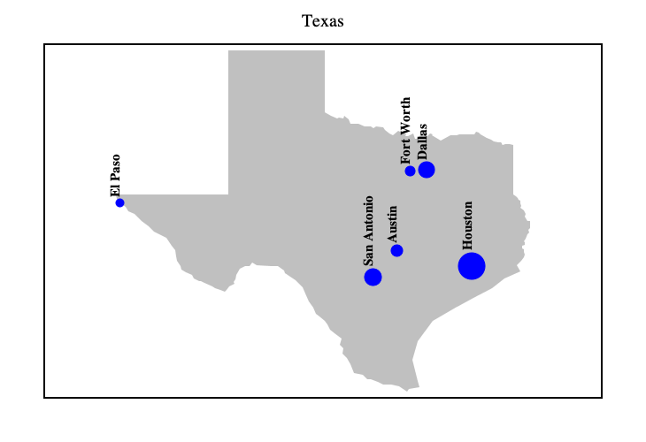

Polygon Plot
Lets draw a polygon shape of state of Texas showing its 6 largest cities where size of the circle depicting city depends on its population. Note that domain and range were set explicitly to give equal scales along the x and y axis.
import java.awt.geom.AffineTransform
import java.awt.{Color, Font}
import xyz.devfortress.splot._
def main(args: Array[String]): Unit = {
val edgePadding = 0.2
val newRange = (texas.map(_._2).min - edgePadding, texas.map(_._2).max + edgePadding)
val fig = Figure(
title = "Texas",
xTicks = Ticks(), yTicks = Ticks(), // disable ticks along both axis
domain = (-109.067299 + edgePadding, -91.0569 - edgePadding),
range = newRange
)
// lineWidth set to 0 so as to show contour of the state using only fill color
fig add Shape(texas, lineWidth = 0, fillColor = Some(Color.LIGHT_GRAY))
val maxPopulation = cities.map(_.population).max
for (city <- cities) {
val populationIndex = city.population / maxPopulation
fig.scatter(
Seq(city.coordinates),
pt = "o", // Using circle
fc = "blue", // This makes it a filled circle. 'fc' stands for 'fill color'
ps=(30 * populationIndex).toInt, // circle size depends on population of the city
color = "blue" // color of the rim of the circle is the same as fill color
)
fig add Label(
city.name,
city.coordinates._1,
city.coordinates._2 + 0.5 * populationIndex, // slightly shift label upwards
font = Font.decode("Serif-15")
.deriveFont(Font.BOLD)
.deriveFont(AffineTransform.getRotateInstance(-Math.PI/2)))
}
fig.show(730, 500)
}

Data for Texas boundary and cities is:
val texas = Seq(
(-106.5715, 31.8659), (-106.5042, 31.7504), (-106.3092, 31.6242), (-106.2103, 31.4638),
(-106.0181, 31.3912), (-105.7874, 31.1846), (-105.5663, 31.0012), (-105.4015, 30.8456),
(-105.0032, 30.6462), (-104.8521, 30.3847), (-104.7437, 30.2591), (-104.6915, 30.0738),
(-104.6777, 29.9169), (-104.5679, 29.7644), (-104.5280, 29.6475), (-104.4044, 29.5603),
(-104.2067, 29.4719), (-104.1559, 29.3834), (-103.9774, 29.2948), (-103.9128, 29.2804),
(-103.8208, 29.2481), (-103.5640, 29.1378), (-103.4692, 29.0682), (-103.3154, 29.0105),
(-103.1616, 28.9601), (-103.0957, 29.0177), (-103.0298, 29.1330), (-102.8677, 29.2157),
(-102.8979, 29.2565), (-102.8375, 29.3570), (-102.8004, 29.4898), (-102.7002, 29.6881),
(-102.5134, 29.7691), (-102.3843, 29.7596), (-102.3047, 29.8788), (-102.1509, 29.7834),
(-101.7004, 29.7572), (-101.4917, 29.7644), (-101.2939, 29.6308), (-101.2582, 29.5269),
(-101.0056, 29.3642), (-100.9204, 29.3056), (-100.7707, 29.1642), (-100.7007, 29.0946),
(-100.6306, 28.9012), (-100.4974, 28.6593), (-100.3601, 28.4675), (-100.2969, 28.2778),
(-100.1733, 28.1882), (-100.0195, 28.0526), (-99.9344, 27.9435), (-99.8438, 27.7638),
(-99.7119, 27.6641), (-99.4812, 27.4839), (-99.5375, 27.3059), (-99.4290, 27.1948),
(-99.4455, 27.0175), (-99.3164, 26.8829), (-99.2065, 26.6867), (-99.0967, 26.4116),
(-98.8138, 26.3574), (-98.6668, 26.2257), (-98.5474, 26.2343), (-98.3276, 26.1357),
(-98.1697, 26.0457), (-97.9143, 26.0518), (-97.6643, 26.0050), (-97.4020, 25.8419),
(-97.3526, 25.9074), (-97.0148, 25.9679), (-97.0697, 26.1789), (-97.2249, 26.8253),
(-97.0752, 27.4230), (-96.6096, 28.0599), (-95.9285, 28.4228), (-95.3036, 28.7568),
(-94.7296, 29.0742), (-94.3355, 29.3810), (-93.8205, 29.6021), (-93.9317, 29.8013),
(-93.8136, 29.9157), (-93.7230, 30.0489), (-93.6996, 30.1214), (-93.7216, 30.2021),
(-93.7038, 30.2792), (-93.7628, 30.3278), (-93.7587, 30.3835), (-93.7010, 30.4380),
(-93.7024, 30.5079), (-93.7299, 30.5362), (-93.6694, 30.6296), (-93.6090, 30.7466),
(-93.5527, 30.8114), (-93.5747, 30.8834), (-93.5307, 30.9376), (-93.5074, 31.0318),
(-93.5266, 31.0812), (-93.5335, 31.1787), (-93.5980, 31.1670), (-93.6832, 31.3055),
(-93.6708, 31.3830), (-93.6887, 31.4369), (-93.7202, 31.5107), (-93.8315, 31.5820),
(-93.8123, 31.6440), (-93.8232, 31.7188), (-93.8342, 31.7936), (-93.8782, 31.8309),
(-93.9221, 31.8869), (-93.9661, 31.9335), (-94.0430, 32.0081), (-94.0430, 33.4681),
(-94.0430, 33.5414), (-94.1528, 33.5689), (-94.1968, 33.5872), (-94.2627, 33.5872),
(-94.3176, 33.5689), (-94.3945, 33.5597), (-94.4275, 33.5780), (-94.4275, 33.6055),
(-94.4495, 33.6421), (-94.4879, 33.6329), (-94.5236, 33.6421), (-94.6637, 33.6695),
(-94.7461, 33.7061), (-94.8999, 33.7791), (-95.0757, 33.8818), (-95.1526, 33.9251),
(-95.2254, 33.9604), (-95.2858, 33.8750), (-95.5399, 33.8841), (-95.7568, 33.8887),
(-95.8420, 33.8408), (-96.0274, 33.8556), (-96.3528, 33.6901), (-96.6179, 33.8442),
(-96.5836, 33.8898), (-96.6673, 33.8955), (-96.7538, 33.8179), (-96.8335, 33.8613),
(-96.8774, 33.8613), (-96.9159, 33.9388), (-97.0917, 33.7392), (-97.1645, 33.7449),
(-97.2180, 33.8978), (-97.3746, 33.8225), (-97.4611, 33.8305), (-97.4460, 33.8761),
(-97.6945, 33.9798), (-97.8648, 33.8476), (-97.9651, 33.8978), (-98.0983, 34.0299),
(-98.1752, 34.1141), (-98.3743, 34.1425), (-98.4773, 34.0640), (-98.5529, 34.1209),
(-98.7520, 34.1232), (-98.9539, 34.2095), (-99.0637, 34.2073), (-99.1832, 34.2141),
(-99.2505, 34.3593), (-99.3823, 34.4613), (-99.4318, 34.3774), (-99.5718, 34.4160),
(-99.6158, 34.3706), (-99.8094, 34.4726), (-99.9934, 34.5631), (-100.0017, 36.4975),
(-103.0408, 36.5008), (-103.0655, 32.0011), (-106.6168, 32.0023))
val cities = Seq(
City("Houston", (-95.3698, 29.7604), 2.3),
City("San Antonio", (-98.4936, 29.4241), 1.5),
City("Dallas", (-96.7970, 32.7767), 1.4),
City("Austin", (-97.7431, 30.2672), 1.0),
City("Fort Worth", (-97.3308, 32.7555), 0.9),
City("El Paso", (-106.4850, 31.7619), 0.7),
)